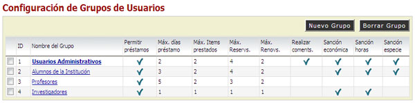
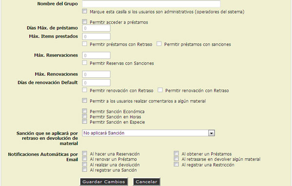
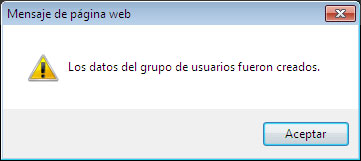
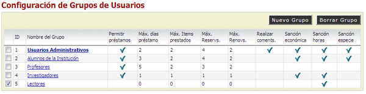
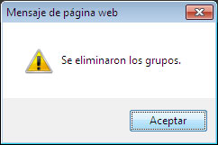

5.11. Grupos de Usuarios / Reglas de Circulación.
<AGREGAR NUEVO GRUPO>
- Hacer "Cilc" en la opción [Nuevo Grupo].
- Aparecerá un Cuadro de Diálogo con los datos requeridos del Nuevo Grupo.

- Escribir el Nombre del Grupo.

- "Seleccionar" la casilla Permitir Acceder a Préstamos, si el nuevo grupo podrá contar con esta función.
- Escribir el Número Máximo de días de Préstamo.
- Escribir el Número Máximo de Items a Prestar.
- Escribir el Número Máximo de Reservaciones.
- Escribir el Número Máximo de Renovaciones.
- "Seleccionar" la Casilla Préstamos con Retrasos si el nuevo grupo podrá tener préstamos aú con retrasos de entrega del material.
- "Seleccionar" la Casilla Préstamos con Sanciones si el nuevo grupo podrá tener préstamos aún con sanciones registradas.
- "Seleccionar" la Casilla Permitir realizar Préstamos.
- "Seleccionar" la Casilla Permitir Sanciones Económicas.
- "Seleccionar" la Casilla Permitir Sanción en Horas.
- "Seleccionar" la Casilla Permitir Sanción en Especie.
- "Seleccionar" la Casilla Marqe esta casilla si los Usuarios son Administrativos según sea el caso.
- "Seleccionar" las notificaciones automáticas por email.
- Hacer "clic" en la opción [Guardar Cambios].
- El sistema mostrará un mensaje de alerta.

<BORRAR UN GRUPO>
- "Seleccionar" la casilla del grupo de Usuarios que se desea eliminar.

- Hacer "Clic" en la opción de [Borrar Grupo].
- El sistema mostrará un mensaje de Alerta.
